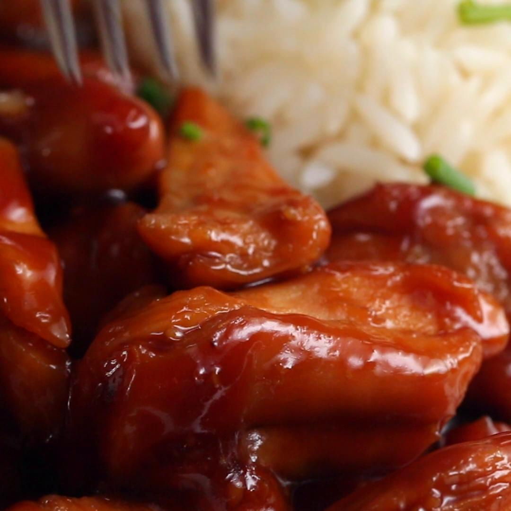

Chicken Teriyaki

Description
Delicious Chicken Teriyaki recipe, few ingredients!
Ingredients
2 lb chicken thighs, sliced into chunks
1 Cup soy sauce
1/2 Cups of brown sugar
Steps
Sear the chicken thighs evenly in a pan, then flip.
Add the soy sauce and brown sugar, stirring and bringing to a boil.
Stir until the sauce has reduced and evenly glazes the chicken.
Serve with rice, if desired!
Enjoy!